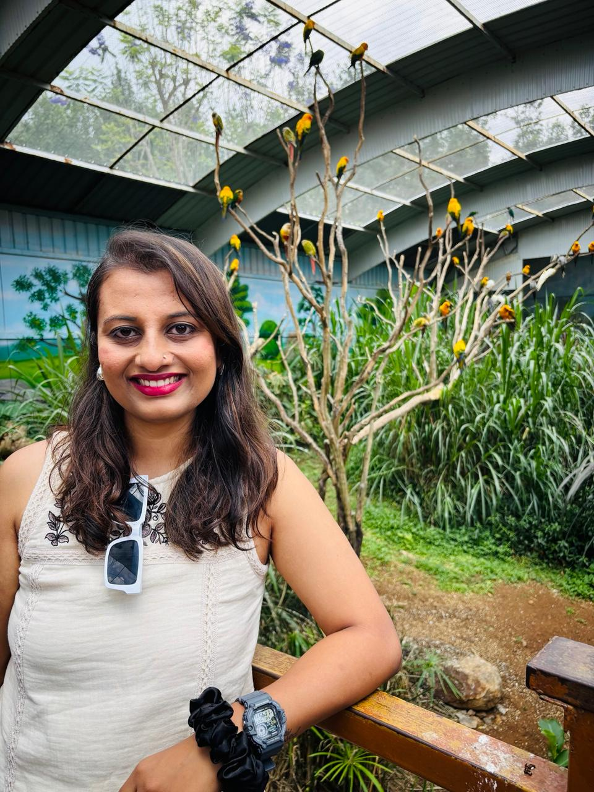

Finance · Data · Writing · Growth
POOJA
Finance & Data Analytics Enthusiast
ETF · Power BI · Python · Substack· R

[ WHO ]
Hi, I’m Pooja.
I’ve spent a good part of my career around ETF data, NAV processing, quality checks, client requests, reporting, and team management A lot of my work has lived between spreadsheets, financial data, problem solving, and making sure things move smoothly.
Right now, I’m on a break from work and using this phase to rebuild with more intention. I’m learning Power BI and Python, pursuing Business Analytics, building small projects, and writing reflections on Substack.
Outside work and learning, I’m spending more time on myself — going to the gym, cooking new dishes, slowing down, and finding my rhythm again.
This little corner of the internet is where my finance journey, data learning, writing, and everyday life come together.
[ RIGHT NOW ]
I spend a lot of my time somewhere between finance, data, spreadsheets, and self-growth.
Most days that means learning analytics, exploring data, working on projects, writing small posts, and trying to stay consistent with my routine.
After years around ETF, NAV data, QC, client management, and team responsibilities, I’m slowly moving toward finance and data analytics.
I’m also learning to trust timing, take care of my body, and build a life that feels calmer, stronger, and more intentional.
[ NOTES FROM WORK AND LIFE ]
- Slowing down does not mean falling behind.
- Sometimes the right phase of life is not about rushing, but rebuilding.
- In this AI era, you don’t need a perfect tech background to begin. You need curiosity, consistency, and the courage to learn deeply.
- Spreadsheets taught me patience. Data taught me patterns. Life is teaching me timing.
- Everyone is carrying a story you know nothing about.
- Ordinary moments become interesting when you pay attention long enough.